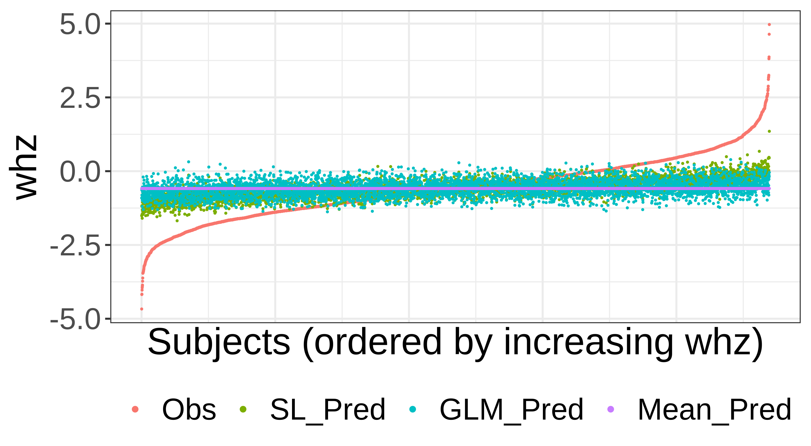
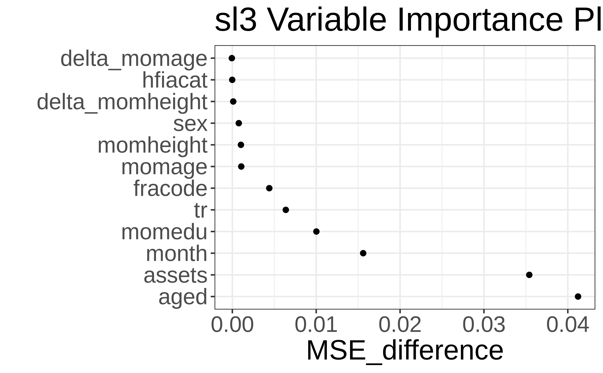

Code
washb_data <- fread(
paste0(
"https://raw.githubusercontent.com/tlverse/tlverse-data/master/",
"wash-benefits/washb_data.csv"
),
stringsAsFactors = TRUE
)Rachael Phillips
Based on the sl3 R package by Jeremy Coyle, Nima Hejazi, Ivana Malenica, Rachael Phillips, and Oleg Sofrygin.
By the end of this chapter you will be able to:
Select a performance metric that is optimized by the true prediction function, or define the true prediction prediction of interest as the optimizer of the performance metric.
Assemble a diverse set (“library”) of learners to be considered in the super learner. In particular, you should be able to:
Specify a meta-learner that optimizes the objective function of interest.
Justify the library and the meta-learner in terms of the prediction problem at hand, intended use of the analysis in the real world, statistical model, sample size, number of covariates, and outcome prevalence for discrete outcomes.
Interpret the fit for a super learner from the table of cross-validated risk estimates and the super learner coefficients.
A common task in data analysis is prediction, or using the observed data to learn a function that takes as input data on covariates/predictors and outputs a predicted value. Occasionally, the scientific question of interest lends itself to causal effect estimation. Even in these scenarios, where prediction is not in the forefront, prediction tasks are embedded in the procedure. For instance, in targeted minimum loss-based estimation (TMLE) for the average treatment effect, predictive modeling is necessary for estimating outcome regressions and propensity scores.
There are various strategies that can be employed to model relationships from data, which we refer to interchangeably as “estimators”, “algorithms”, and “learners”. For some data, algorithms that can pick up on complex relationships among variables are necessary to adequately model it. For other data, parametric regression learners might fit the data reasonably well. It is generally impossible to know in advance which approach will be the best for a given data set and prediction problem.
The Super Learner (SL) solves the issue of selecting an algorithm, as it can consider many of them - from the simplest parametric regressions to the most complex machine learning algorithms (e.g., neural nets, support vector machines, etc). Additionally, it is proven to perform as well as possible (as good as the unknown oracle) in large samples, given the learners specified (van der Laan and Dudoit 2003; van der Laan, Dudoit, and Keles 2004; Dudoit and van der Laan 2005; van der Vaart, Dudoit, and van der Laan 2006). The SL represents an entirely pre-specified, flexible, and theoretically grounded approach for predictive modeling. It has been shown to be adaptive and robust in a variety of applications, even in very small samples. Detailed descriptions outlining the SL procedure are widely available (Polley and van der Laan 2010; Naimi and Balzer 2018). Practical considerations for specifying the SL, including how to specify a rich and diverse library of learners, choose a performance metric for the SL, and specify a cross-validation (CV) scheme, are described in a pre-print article (Phillips et al. 2023). Here, we focus on introducing sl3, the standard tlverse software package for SL.
sl3:In this section, the core functionality for fitting any SL with sl3 is illustrated. In the sections that follow, additional sl3 functionality is presented.
Fitting any SL with sl3 consists of the following three steps:
make_sl3_Task.Lrnr_sl.train.We will use the WASH Benefits Bangladesh study as an example to guide this overview of sl3. In this study, we are interested in predicting the child development outcome, weight-for-height z-score, from covariates/predictors, including socio-economic status variables, gestational age, and maternal features. More information on this dataset is described in the “Meet the Data” chapter of the tlverse handbook.
First, we need to load the data and relevant packages into the R session.
We will use the fread function in the data.table R package to load the WASH Benefits example dataset:
washb_data <- fread(
paste0(
"https://raw.githubusercontent.com/tlverse/tlverse-data/master/",
"wash-benefits/washb_data.csv"
),
stringsAsFactors = TRUE
)Next, we will take a peek at the first few rows of our dataset:
head(washb_data)| whz | tr | fracode | month | aged | sex | momage | momedu | momheight | hfiacat | Nlt18 | Ncomp | watmin | elec | floor | walls | roof | asset_wardrobe | asset_table | asset_chair | asset_khat | asset_chouki | asset_tv | asset_refrig | asset_bike | asset_moto | asset_sewmach | asset_mobile |
|---|---|---|---|---|---|---|---|---|---|---|---|---|---|---|---|---|---|---|---|---|---|---|---|---|---|---|---|
| 0.00 | Control | N05265 | 9 | 268 | male | 30 | Primary (1-5y) | 146.4 | Food Secure | 3 | 11 | 0 | 1 | 0 | 1 | 1 | 0 | 1 | 1 | 1 | 0 | 1 | 0 | 0 | 0 | 0 | 1 |
| -1.16 | Control | N05265 | 9 | 286 | male | 25 | Primary (1-5y) | 148.8 | Moderately Food Insecure | 2 | 4 | 0 | 1 | 0 | 1 | 1 | 0 | 1 | 0 | 1 | 1 | 0 | 0 | 0 | 0 | 0 | 1 |
| -1.05 | Control | N08002 | 9 | 264 | male | 25 | Primary (1-5y) | 152.2 | Food Secure | 1 | 10 | 0 | 0 | 0 | 1 | 1 | 0 | 0 | 1 | 0 | 1 | 0 | 0 | 0 | 0 | 0 | 1 |
| -1.26 | Control | N08002 | 9 | 252 | female | 28 | Primary (1-5y) | 140.2 | Food Secure | 3 | 5 | 0 | 1 | 0 | 1 | 1 | 1 | 1 | 1 | 1 | 0 | 0 | 0 | 1 | 0 | 0 | 1 |
| -0.59 | Control | N06531 | 9 | 336 | female | 19 | Secondary (>5y) | 150.9 | Food Secure | 2 | 7 | 0 | 1 | 0 | 1 | 1 | 1 | 1 | 1 | 1 | 1 | 0 | 0 | 0 | 0 | 0 | 1 |
| -0.51 | Control | N06531 | 9 | 304 | male | 20 | Secondary (>5y) | 154.2 | Severely Food Insecure | 0 | 3 | 1 | 1 | 0 | 1 | 1 | 0 | 0 | 0 | 0 | 1 | 0 | 0 | 0 | 0 | 0 | 1 |
sl3 software (as needed)To install any package, we recommend first clearing the R workspace and then restarting the R session. In RStudio, this can be achieved by clicking the tab “Session” then “Clear Workspace”, and then clicking “Session” again then “Restart R”.
We can install sl3 using the function install_github provided in the devtools R package. We are using the development (“devel”) version of sl3 in these materials, so we show how to install that version below.
library(devtools)
install_github("tlverse/sl3@devel")Once the R package is installed, we recommend restarting the R session again.
sl3 softwareOnce sl3 is installed, we can load it like any other R package:
library(sl3)make_sl3_TaskThe sl3_Task object defines the prediction task of interest. Recall that our task in this illustrative example is to use the WASH Benefits Bangladesh example dataset to learn a function of the covariates for predicting weight-for-height Z-score whz.
# create the task (i.e., use washb_data to predict outcome using covariates)
task <- make_sl3_Task(
data = washb_data,
outcome = "whz",
covariates = c("tr", "fracode", "month", "aged", "sex", "momage", "momedu",
"momheight", "hfiacat", "Nlt18", "Ncomp", "watmin", "elec",
"floor", "walls", "roof", "asset_wardrobe", "asset_table",
"asset_chair", "asset_khat", "asset_chouki", "asset_tv",
"asset_refrig", "asset_bike", "asset_moto", "asset_sewmach",
"asset_mobile")
)
# let's examine the task
task
An sl3 Task with 4695 obs and these nodes:
$covariates
[1] "tr" "fracode" "month" "aged"
[5] "sex" "momage" "momedu" "momheight"
[9] "hfiacat" "Nlt18" "Ncomp" "watmin"
[13] "elec" "floor" "walls" "roof"
[17] "asset_wardrobe" "asset_table" "asset_chair" "asset_khat"
[21] "asset_chouki" "asset_tv" "asset_refrig" "asset_bike"
[25] "asset_moto" "asset_sewmach" "asset_mobile" "delta_momage"
[29] "delta_momheight"
$outcome
[1] "whz"
$id
NULL
$weights
NULL
$offset
NULL
$time
NULLThe sl3_Task keeps track of the roles the variables play in the prediction problem. Additional information relevant to the prediction task (such as observational-level weights, offset, id, CV folds) can also be specified in make_sl3_Task. The default CV fold structure in sl3 is V-fold CV (VFCV) with V=10 folds. If id is specified in the task, a clustered V=10 VFCV scheme is considered; if the outcome type is binary or categorical, then a stratified V=10 VFCV scheme is considered. Different CV schemes can be specified by inputting an origami folds object, as generated by the make_folds function in the origami R package. For more information, refer to the previous Chapter on cross-validation, or consult documentation on origami’s make_folds function (e.g., in RStudio, by loading the origami R package and then inputting “?make_folds” in the Console). For more details on sl3_Task, refer to its documentation (e.g., by inputting “?sl3_Task” in R).
Tip: If you type task$ and then press the tab key (press tab twice if not in RStudio), you can view all of the active and public fields, as well as methods that can be accessed from the task$ object. This $ is like the key to access many internals of an object. In the next section, will see how we can use $ to dig into SL fit objects as well - to obtain predictions from an SL fit or candidate learners, examine an SL fit or its candidates, and summarize an SL fit.
Lrnr_slIn order to create Lrnr_sl we need to specify, at the minimum, a set of learners for the SL to consider as candidates. This set of algorithms is also commonly referred to as the “library”. We might also specify the meta-learner, which is the algorithm that ensembles the learners (note that this part is optional since there are already defaults set up in sl3). See “Practical considerations for specifying a super learner” for step-by-step guidelines for tailoring the SL specification (including the library and meta-learner(s)) that optimizes the prediction task at hand (Phillips et al. 2023).
Learners have properties that indicate what features they support. We may use the sl3_list_properties() function to get a list of all properties supported by at least one learner:
sl3_list_properties()
[1] "binomial" "categorical" "continuous" "cv"
[5] "density" "h2o" "ids" "importance"
[9] "offset" "preprocessing" "sampling" "screener"
[13] "timeseries" "weights" "wrapper" Since whz is a continuous outcome, we can identify the learners that support this outcome type with sl3_list_learners():
sl3_list_learners(properties = "continuous")
[1] "Lrnr_arima" "Lrnr_bartMachine"
[3] "Lrnr_bayesglm" "Lrnr_bound"
[5] "Lrnr_caret" "Lrnr_cv_selector"
[7] "Lrnr_dbarts" "Lrnr_earth"
[9] "Lrnr_expSmooth" "Lrnr_ga"
[11] "Lrnr_gam" "Lrnr_gbm"
[13] "Lrnr_glm" "Lrnr_glm_fast"
[15] "Lrnr_glm_semiparametric" "Lrnr_glmnet"
[17] "Lrnr_glmtree" "Lrnr_grf"
[19] "Lrnr_grfcate" "Lrnr_gru_keras"
[21] "Lrnr_gts" "Lrnr_h2o_glm"
[23] "Lrnr_h2o_grid" "Lrnr_hal9001"
[25] "Lrnr_HarmonicReg" "Lrnr_hts"
[27] "Lrnr_lightgbm" "Lrnr_lstm_keras"
[29] "Lrnr_mean" "Lrnr_multiple_ts"
[31] "Lrnr_nnet" "Lrnr_nnls"
[33] "Lrnr_optim" "Lrnr_pkg_SuperLearner"
[35] "Lrnr_pkg_SuperLearner_method" "Lrnr_pkg_SuperLearner_screener"
[37] "Lrnr_polspline" "Lrnr_randomForest"
[39] "Lrnr_ranger" "Lrnr_rpart"
[41] "Lrnr_rugarch" "Lrnr_screener_correlation"
[43] "Lrnr_solnp" "Lrnr_stratified"
[45] "Lrnr_svm" "Lrnr_tsDyn"
[47] "Lrnr_xgboost" Now that we have an idea of some learners, let’s instantiate a few of them. Below we instantiate Lrnr_glm and Lrnr_mean, a main terms generalized linear model (GLM) and a mean model, respectively.
lrn_glm <- Lrnr_glm$new()
lrn_mean <- Lrnr_mean$new()For both of the learners created above, we just used the default tuning parameters. We can also customize a learner’s tuning parameters to incorporate a diversity of different settings, and consider the same learner with different tuning parameter specifications.
Below, we consider the same base learner, Lrnr_glmnet (i.e., GLMs with elastic net regression), and create two different candidates from it: an L2-penalized/ridge regression and an L1-penalized/lasso regression.
# penalized regressions:
lrn_ridge <- Lrnr_glmnet$new(alpha = 0)
lrn_lasso <- Lrnr_glmnet$new(alpha = 1)By setting alpha in Lrnr_glmnet above, we customized this learner’s tuning parameter. When we instantiate Lrnr_hal9001 below we show how multiple tuning parameters (specifically, max_degreeand num_knots) can be modified at the same time.
Let’s also instantiate some more learners that do not enforce relationships to be linear or monotonic, which further diversifies the set of candidates to include nonparametric learners.
# spline regressions:
lrn_polspline <- Lrnr_polspline$new()
lrn_earth <- Lrnr_earth$new()
# fast highly adaptive lasso (HAL) implementation
lrn_hal <- Lrnr_hal9001$new(max_degree = 2, num_knots = c(3,2), nfolds = 5)
# tree-based methods
lrn_ranger <- Lrnr_ranger$new()
lrn_xgb <- Lrnr_xgboost$new()Let’s also include a generalized additive model (GAM) and Bayesian GLM to further diversify the pool that we will consider as candidates in the SL.
lrn_gam <- Lrnr_gam$new()
lrn_bayesglm <- Lrnr_bayesglm$new()Now that we’ve instantiated a set of learners, we need to put them together so the SL can consider them as candidates. In sl3, we do this by creating a so-called Stack of learners. A Stack is created in the same way we created the learners. This is because Stack is a learner itself; it has the same interface as all of the other learners. What makes a stack special is that it considers multiple learners at once: it can train them simultaneously, so that their predictions can be combined and/or compared.
stack <- Stack$new(
lrn_glm, lrn_mean, lrn_ridge, lrn_lasso, lrn_polspline, lrn_earth, lrn_hal,
lrn_ranger, lrn_xgb, lrn_gam, lrn_bayesglm
)
stack
[1] "Lrnr_glm_TRUE" "Lrnr_mean"
[3] "Lrnr_glmnet_deviance_10_0_100_TRUE" "Lrnr_glmnet_deviance_10_1_100_TRUE"
[5] "Lrnr_polspline" "Lrnr_earth_2_3_backward_0_1_0_0"
[7] "Lrnr_hal9001_2_1_c(3, 2)_5" "Lrnr_ranger_500_TRUE_none_1"
[9] "Lrnr_xgboost_20_1" "Lrnr_gam_GCV.Cp"
[11] "Lrnr_bayesglm_TRUE" We can see that the names of the learners in the stack are long. This is because the default naming of a learner in sl3 is clunky: for each learner, every tuning parameter in sl3 is contained in the name. In the next section, “Naming Learners”, we show a few different ways for the user to name learners as they wish.
Now that we have instantiated a set of learners and stacked them together, we are ready to instantiate the SL. We will use the default meta-learner, which is non-negative least squares (NNLS) regression (Lrnr_nnls) for continuous outcomes. For illustrative purposes, we will still go ahead and specify it in the following.
sl <- Lrnr_sl$new(learners = stack, metalearner = Lrnr_nnls$new())trainThe last step for fitting the SL to the prediction task is to call train and supply the task. Before we call train, we will set a random number generator so the results are reproducible, and we will also time it.
start_time <- proc.time() # start time
set.seed(4197)
sl_fit <- sl$train(task = task)
Error in fit_object$training_offset <- task$has_node("offset") :
ALTLIST classes must provide a Set_elt method [class: XGBAltrepPointerClass,
pkg: xgboost]
Error in fit_object$training_offset <- task$has_node("offset") :
ALTLIST classes must provide a Set_elt method [class: XGBAltrepPointerClass,
pkg: xgboost]
Error in fit_object$training_offset <- task$has_node("offset") :
ALTLIST classes must provide a Set_elt method [class: XGBAltrepPointerClass,
pkg: xgboost]
Error in fit_object$training_offset <- task$has_node("offset") :
ALTLIST classes must provide a Set_elt method [class: XGBAltrepPointerClass,
pkg: xgboost]
Error in fit_object$training_offset <- task$has_node("offset") :
ALTLIST classes must provide a Set_elt method [class: XGBAltrepPointerClass,
pkg: xgboost]
Error in fit_object$training_offset <- task$has_node("offset") :
ALTLIST classes must provide a Set_elt method [class: XGBAltrepPointerClass,
pkg: xgboost]
Error in fit_object$training_offset <- task$has_node("offset") :
ALTLIST classes must provide a Set_elt method [class: XGBAltrepPointerClass,
pkg: xgboost]
Error in fit_object$training_offset <- task$has_node("offset") :
ALTLIST classes must provide a Set_elt method [class: XGBAltrepPointerClass,
pkg: xgboost]
Error in fit_object$training_offset <- task$has_node("offset") :
ALTLIST classes must provide a Set_elt method [class: XGBAltrepPointerClass,
pkg: xgboost]
Error in fit_object$training_offset <- task$has_node("offset") :
ALTLIST classes must provide a Set_elt method [class: XGBAltrepPointerClass,
pkg: xgboost]
Error in fit_object$training_offset <- task$has_node("offset") :
ALTLIST classes must provide a Set_elt method [class: XGBAltrepPointerClass,
pkg: xgboost]
runtime_sl_fit <- proc.time() - start_time # end time - start time = run time
runtime_sl_fit
user system elapsed
188.56 1.21 176.50 It took 176.5 seconds (2.9 minutes) to fit the SL.
In this section, the core functionality for fitting any SL with sl3 was illustrated. This consists of the following three steps:
make_sl3_Task.Lrnr_sl.train.This example was for demonstrative purposes only. See Phillips et al. (2023) for step-by-step guidelines for constructing a SL that is well-specified for the prediction task at hand.
sl3 Topics:We will draw on the fitted SL object from above, sl_fit, to obtain the SL’s predicted whz value for each subject.
sl_preds <- sl_fit$predict(task = task)
head(sl_preds)
[1] -0.5673 -0.8725 -0.6891 -0.7376 -0.6301 -0.6582We can also obtain predicted values from a candidate learner in the SL. Below we obtain predictions for the GLM learner.
glm_preds <- sl_fit$learner_fits$Lrnr_glm_TRUE$predict(task = task)
head(glm_preds)
[1] -0.7262 -0.9361 -0.7085 -0.6492 -0.7013 -0.8462Note that the predicted values for the SL correspond to so-called “full fits” of the candidate learners, in which the candidates are fit to the entire analytic dataset, i.e., all of the data supplied as data to make_sl3_Task. Figure 2 in Phillips et al. (2023) provides a visual overview of the SL fitting procedure.
# we can also access the candidate learner full fits directly and obtain
# the same "full fit" candidate predictions from there
# (we split this into two lines to avoid overflow)
stack_full_fits <- sl_fit$fit_object$full_fit$learner_fits$Stack$learner_fits
glm_preds_full_fit <- stack_full_fits$Lrnr_glm_TRUE$predict(task)
# check that they are identical
identical(glm_preds, glm_preds_full_fit)
[1] TRUEBelow we visualize the observed values for whz and predicted whz values for SL, GLM and the mean.
# table of observed and predicted outcome values and arrange by observed values
df_plot <- data.table(
Obs = washb_data[["whz"]], SL_Pred = sl_preds, GLM_Pred = glm_preds,
Mean_Pred = sl_fit$learner_fits$Lrnr_mean$predict(task)
)
df_plot <- df_plot[order(df_plot$Obs), ] head(df_plot)| Obs | SL_Pred | GLM_Pred | Mean_Pred |
|---|---|---|---|
| -4.67 | -1.509 | -0.9096 | -0.5861 |
| -4.18 | -1.191 | -0.6391 | -0.5861 |
| -4.17 | -1.169 | -0.8098 | -0.5861 |
| -4.03 | -1.467 | -0.8960 | -0.5861 |
| -3.95 | -1.595 | -1.1952 | -0.5861 |
| -3.90 | -1.303 | -0.9849 | -0.5861 |
# melt the table so we can plot observed and predicted values
df_plot$id <- seq(1:nrow(df_plot))
df_plot_melted <- melt(
df_plot, id.vars = "id",
measure.vars = c("Obs", "SL_Pred", "GLM_Pred", "Mean_Pred")
)
library(ggplot2)
ggplot(df_plot_melted, aes(id, value, color = variable)) +
geom_point(size = 0.1) +
labs(x = "Subjects (ordered by increasing whz)",
y = "whz") +
theme(legend.position = "bottom", legend.title = element_blank(),
axis.text.x = element_blank(), axis.ticks.x = element_blank()) +
guides(color = guide_legend(override.aes = list(size = 1)))
We can also obtain the cross-validated (CV) predictions for the candidate learners. We can do this in a few different ways.
# one way to obtain the CV predictions for the candidate learners
cv_preds_option1 <- sl_fit$fit_object$cv_fit$predict_fold(
task = task, fold_number = "validation"
)
# another way to obtain the CV predictions for the candidate learners
cv_preds_option2 <- sl_fit$fit_object$cv_fit$predict(task = task)
# we can check that they are identical
identical(cv_preds_option1, cv_preds_option2)
[1] TRUEhead(cv_preds_option1)| Lrnr_glm_TRUE | Lrnr_mean | Lrnr_glmnet_deviance_10_0_100_TRUE | Lrnr_glmnet_deviance_10_1_100_TRUE | Lrnr_polspline | Lrnr_earth_2_3_backward_0_1_0_0 | Lrnr_hal9001_2_1_c(3, 2)_5 | Lrnr_ranger_500_TRUE_none_1 | Lrnr_gam_GCV.Cp | Lrnr_bayesglm_TRUE |
|---|---|---|---|---|---|---|---|---|---|
| -0.7453 | -0.5931 | -0.6915 | -0.6892 | -0.7250 | -0.7156 | -0.6946 | -0.7797 | -0.7244 | -0.7452 |
| -0.9447 | -0.5865 | -0.8215 | -0.7872 | -0.8449 | -0.8352 | -0.8268 | -0.7595 | -0.9324 | -0.9445 |
| -0.6494 | -0.5931 | -0.7015 | -0.7242 | -0.7140 | -0.6089 | -0.7045 | -0.5783 | -0.6111 | -0.6495 |
| -0.6211 | -0.5846 | -0.6210 | -0.6576 | -0.6525 | -0.6916 | -0.6843 | -0.5196 | -0.5910 | -0.6214 |
| -0.7647 | -0.5846 | -0.6595 | -0.7025 | -0.7001 | -0.6969 | -0.6788 | -0.6336 | -0.7975 | -0.7649 |
| -0.8873 | -0.5763 | -0.7893 | -0.6866 | -0.7125 | -0.4770 | -0.6897 | -0.7833 | -0.9132 | -0.8872 |
predict_foldOur first option to get CV predictions, cv_preds_option1, used the predict_fold function to obtain validation set predictions across all folds. This function only exists for learner fits that are cross-validated in sl3, like those in Lrnr_sl. In addition to supplying fold_number = "validation" in predict_fold, we can set fold_number = "full" to obtain predictions from learners fit to the entire dataset (i.e., all of the data supplied to make_sl3_Task). For instance, below we show that glm_preds we calculated above can also be obtained by setting fold_number = "full".
full_fit_preds <- sl_fit$fit_object$cv_fit$predict_fold(
task = task, fold_number = "full"
)
glm_full_fit_preds <- full_fit_preds$Lrnr_glm_TRUE
# check that they are identical
identical(glm_preds, glm_full_fit_preds)
[1] TRUEWe can also supply a specific integer between 1 and the number of CV folds to the fold_number argument in predict_fold; example of this functionality is shown in the next part.
We can get the CV predictions “by hand”, by tapping into each of the folds, and then using the fitted candidate learners (which were trained to the training set for each fold) to predict validation set outcomes (which were not seen in training).
##### CV predictions "by hand" #####
# for each fold, i, we obtain validation set predictions:
cv_preds_list <- lapply(seq_along(task$folds), function(i){
# get validation dataset for fold i:
v_data <- task$data[task$folds[[i]]$validation_set, ]
# get observed outcomes in fold i's validation dataset:
v_outcomes <- v_data[["whz"]]
# make task (for prediction) using fold i's validation dataset as data,
# and keeping all else the same:
v_task <- make_sl3_Task(covariates = task$nodes$covariates, data = v_data)
# get predicted outcomes for fold i's validation dataset, using candidates
# trained to fold i's training dataset
v_preds <- sl_fit$fit_object$cv_fit$predict_fold(
task = v_task, fold_number = i
)
# note: v_preds is a matrix of candidate learner predictions, where the
# number of rows is the number of observations in fold i's validation dataset
# and the number of columns is the number of candidate learners (excluding
# any that might have failed)
# an identical way to get v_preds, which is used when we calculate the
# cv risk by hand in a later part of this chapter:
# v_preds <- sl_fit$fit_object$cv_fit$fit_object$fold_fits[[i]]$predict(
# task = v_task
# )
# we will also return the row indices for fold i's validation set, so we
# can later reorder the CV predictions and make sure they are equal to what
# we obtained above
return(list("v_preds" = v_preds, "v_index" = task$folds[[i]]$validation_set))
})
# extract the validation set predictions across all folds
cv_preds_byhand <- do.call(rbind, lapply(cv_preds_list, "[[", "v_preds"))
# extract the indices of validation set observations across all folds
# then reorder cv_preds_byhand to correspond to the ordering in the data
row_index_in_data <- unlist(lapply(cv_preds_list, "[[", "v_index"))
cv_preds_byhand_ordered <- cv_preds_byhand[order(row_index_in_data), ]
# now we can check that they are identical
identical(cv_preds_option1, cv_preds_byhand_ordered)
[1] TRUEIf we wanted to obtain predicted values for new data then we would need to create a new sl3_Task from the new data. Also, the covariates in this new sl3_Task must be identical to the covariates in the sl3_Task for training. As an example, let’s assume we have new covariate data washb_data_new for which we want to use the fitted SL to obtain predicted weight-for-height z-score values.
# we do not evaluate this code chunk, as `washb_data_new` does not exist
prediction_task <- make_sl3_Task(
data = washb_data_new, # assuming we have some new data for predictions
covariates = c("tr", "fracode", "month", "aged", "sex", "momage", "momedu",
"momheight", "hfiacat", "Nlt18", "Ncomp", "watmin", "elec",
"floor", "walls", "roof", "asset_wardrobe", "asset_table",
"asset_chair", "asset_khat", "asset_chouki", "asset_tv",
"asset_refrig", "asset_bike", "asset_moto", "asset_sewmach",
"asset_mobile")
)
sl_preds_new_task <- sl_fit$predict(task = prediction_task)Counterfactual predictions are predicted values under an intervention of interest. Recall from above that we can obtain predicted values for new data by creating a sl3_Task with the new data whose covariates match the set considered for training. As an example that draws on the WASH Benefits Bangladesh study, suppose we would like to obtain predictions for every subject’s weight-for-height z-score (whz) outcome under an intervention on treatment (tr) that sets it to the nutrition, water, sanitation, and handwashing regime.
First we need to create a copy of the dataset, and then we can intervene on tr in the copied dataset, create a new sl3_Task using the copied data and the same covariates as the training task, and finally obtain predictions from the fitted SL (which we named sl_fit in the previous section).
### 1. Copy data
tr_intervention_data <- data.table::copy(washb_data)
### 2. Define intervention in copied dataset
tr_intervention <- rep("Nutrition + WSH", nrow(washb_data))
# NOTE: When we intervene on a categorical variable (such as "tr"), we need to
# define the intervention as a categorical variable (ie a factor).
# Also, even though not all levels of the factor will be represented in
# the intervention, we still need this factor to reflect all of the
# levels that are present in the observed data
tr_levels <- levels(washb_data[["tr"]])
tr_levels
[1] "Control" "Handwashing" "Nutrition" "Nutrition + WSH"
[5] "Sanitation" "WSH" "Water"
tr_intervention <- factor(tr_intervention, levels = tr_levels)
tr_intervention_data[,"tr" := tr_intervention, ]
### 3. Create a new sl3_Task
# note that we do not need to specify the outcome in this new task since we are
# only using it to obtain predictions
tr_intervention_task <- make_sl3_Task(
data = tr_intervention_data,
covariates = c("tr", "fracode", "month", "aged", "sex", "momage", "momedu",
"momheight", "hfiacat", "Nlt18", "Ncomp", "watmin", "elec",
"floor", "walls", "roof", "asset_wardrobe", "asset_table",
"asset_chair", "asset_khat", "asset_chouki", "asset_tv",
"asset_refrig", "asset_bike", "asset_moto", "asset_sewmach",
"asset_mobile")
)
### 4. Get predicted values under intervention of interest
# SL predictions of what "whz" would have been had everyone received "tr"
# equal to "Nutrition + WSH"
counterfactual_pred <- sl_fit$predict(tr_intervention_task)Note that this type of intervention, where every subject receives the same intervention, is referred to as “static”. Interventions that vary depending on the characteristics of the subject are referred to as “dynamic”. For instance, we might consider an intervention that sets the treatment to the desired (nutrition, water, sanitation, and handwashing) regime if the subject has a refridgerator, and a nutrition-omitted (water, sanitation, and handwashing) regime otherwise.
dynamic_tr_intervention_data <- data.table::copy(washb_data)
dynamic_tr_intervention <- ifelse(
washb_data[["asset_refrig"]] == 1, "Nutrition + WSH", "WSH"
)
dynamic_tr_intervention <- factor(dynamic_tr_intervention, levels = tr_levels)
dynamic_tr_intervention_data[,"tr" := dynamic_tr_intervention, ]
dynamic_tr_intervention_task <- make_sl3_Task(
data = dynamic_tr_intervention_data,
covariates = c("tr", "fracode", "month", "aged", "sex", "momage", "momedu",
"momheight", "hfiacat", "Nlt18", "Ncomp", "watmin", "elec",
"floor", "walls", "roof", "asset_wardrobe", "asset_table",
"asset_chair", "asset_khat", "asset_chouki", "asset_tv",
"asset_refrig", "asset_bike", "asset_moto", "asset_sewmach",
"asset_mobile")
)
### 4. Get predicted values under intervention of interest
# SL predictions of what "whz" would have been had every subject received "tr"
# equal to "Nutrition + WSH" if they had a fridge and "WSH" if they didn't have
# a fridge
counterfactual_pred <- sl_fit$predict(dynamic_tr_intervention_task)We can see how the meta-learner created a function of the learners in a few ways. In our illustrative example, we considered the default, NNLS meta-learner for continuous outcomes. For meta-learners that simply learn a weighted combination, we can examine their coefficients.
round(sl_fit$coefficients, 3)
Lrnr_glm_TRUE Lrnr_mean
0.000 0.000
Lrnr_glmnet_deviance_10_0_100_TRUE Lrnr_glmnet_deviance_10_1_100_TRUE
0.090 0.000
Lrnr_polspline Lrnr_earth_2_3_backward_0_1_0_0
0.161 0.398
Lrnr_hal9001_2_1_c(3, 2)_5 Lrnr_ranger_500_TRUE_none_1
0.000 0.350
Lrnr_gam_GCV.Cp Lrnr_bayesglm_TRUE
0.000 0.000 We can also examine the coefficients by directly accessing the meta-learner’s fit object.
metalrnr_fit <- sl_fit$fit_object$cv_meta_fit$fit_object
round(metalrnr_fit$coefficients, 3)
Lrnr_glm_TRUE Lrnr_mean
0.000 0.000
Lrnr_glmnet_deviance_10_0_100_TRUE Lrnr_glmnet_deviance_10_1_100_TRUE
0.090 0.000
Lrnr_polspline Lrnr_earth_2_3_backward_0_1_0_0
0.161 0.398
Lrnr_hal9001_2_1_c(3, 2)_5 Lrnr_ranger_500_TRUE_none_1
0.000 0.350
Lrnr_gam_GCV.Cp Lrnr_bayesglm_TRUE
0.000 0.000 Direct access to the meta-learner fit object is also handy for more complex meta-learners (e.g., non-parametric meta-learners) that are not defined by a simple set of main terms regression coefficients.
We can obtain a table of the cross-validated (CV) predictive performance, i.e., the CV risk, for each learner included in the SL. Below, we use the squared error loss for the evaluation function, which equates to the mean squared error (MSE) as the metric to summarize predictive performance. The reason why we use the MSE is because it is a valid metric for estimating the conditional mean, which is what we’re learning the prediction function for in the WASH Benefits example. For more information on selecting an appropriate performance metric, see Phillips et al. (2023).
cv_risk_table <- sl_fit$cv_risk(eval_fun = loss_squared_error)cv_risk_table[,c(1:3)]| learner | coefficients | MSE |
|---|---|---|
| Lrnr_glm_TRUE | 0.0000 | 1.022 |
| Lrnr_mean | 0.0000 | 1.065 |
| Lrnr_glmnet_deviance_10_0_100_TRUE | 0.0900 | 1.016 |
| Lrnr_glmnet_deviance_10_1_100_TRUE | 0.0000 | 1.015 |
| Lrnr_polspline | 0.1615 | 1.016 |
| Lrnr_earth_2_3_backward_0_1_0_0 | 0.3982 | 1.013 |
| Lrnr_hal9001_2_1_c(3, 2)_5 | 0.0000 | 1.017 |
| Lrnr_ranger_500_TRUE_none_1 | 0.3504 | 1.014 |
| Lrnr_gam_GCV.Cp | 0.0000 | 1.024 |
| Lrnr_bayesglm_TRUE | 0.0000 | 1.022 |
Similar to how we got the CV predictions “by hand”, we can also calculate the CV performance/risk in a way that exposes the procedure. Specifically, this is done by tapping into each of the folds, and then using the fitted candidate learners (which were trained to the training set for each fold) to predict validation set outcomes (which were not seen in training) and then measure the predictive performance (i.e., risk). Each candidate learner’s fold-specific risk is then averaged across all folds to obtain the CV risk. The function cv_risk does all of this internally and we show how to do it by hand below, which can be helpful for understanding the CV risk and how it is calculated.
##### CV risk "by hand" #####
# for each fold, i, we obtain predictive performance/risk for each candidate:
cv_risks_list <- lapply(seq_along(task$folds), function(i){
# get validation dataset for fold i:
v_data <- task$data[task$folds[[i]]$validation_set, ]
# get observed outcomes in fold i's validation dataset:
v_outcomes <- v_data[["whz"]]
# make task (for prediction) using fold i's validation dataset as data,
# and keeping all else the same:
v_task <- make_sl3_Task(covariates = task$nodes$covariates, data = v_data)
# get predicted outcomes for fold i's validation dataset, using candidates
# trained to fold i's training dataset
v_preds <- sl_fit$fit_object$cv_fit$fit_object$fold_fits[[i]]$predict(v_task)
# note: v_preds is a matrix of candidate learner predictions, where the
# number of rows is the number of observations in fold i's validation dataset
# and the number of columns is the number of candidate learners (excluding
# any that might have failed)
# calculate predictive performance for fold i for each candidate
eval_function <- loss_squared_error # valid for estimation of conditional mean
v_losses <- apply(v_preds, 2, eval_function, v_outcomes)
cv_risks <- colMeans(v_losses)
return(cv_risks)
})
# average the predictive performance across all folds for each candidate
cv_risks_byhand <- colMeans(do.call(rbind, cv_risks_list))
cv_risk_table_byhand <- data.table(
learner = names(cv_risks_byhand), MSE = cv_risks_byhand
)
# check that the CV risks are identical when calculated by hand and function
# (ignoring small differences by rounding to the fourth decimal place)
identical(
round(cv_risk_table_byhand$MSE,4), round(as.numeric(cv_risk_table$MSE),4)
)
[1] FALSEWe can see from the CV risk table above that the SL is not listed. This is because we do not have a CV risk for the SL unless we cross-validate it or include it as a candidate in another SL; the latter is shown in the next subsection. Below, we show how to obtain a CV risk estimate for the SL using function cv_sl. Like before when we called sl$train, we will set a random number generator so the results are reproducible, and we will also time this.
start_time <- proc.time()
set.seed(569)
cv_sl_fit <- cv_sl(lrnr_sl = sl_fit, task = task, eval_fun = loss_squared_error)
runtime_cv_sl_fit <- proc.time() - start_time
runtime_cv_sl_fit user system elapsed
2792.6 159.6 3051.4 It took 3051.4 seconds (50.9 minutes) to fit the CV SL.
cv_sl_fit$cv_risk[,c(1:3)]| learner | MSE | se |
|---|---|---|
| Lrnr_glm_TRUE | 1.022 | 0.0240 |
| Lrnr_mean | 1.065 | 0.0250 |
| Lrnr_glmnet_NULL_deviance_10_0_100_TRUE | 1.017 | 0.0237 |
| Lrnr_glmnet_NULL_deviance_10_1_100_TRUE | 1.014 | 0.0236 |
| Lrnr_polspline | 1.016 | 0.0237 |
| Lrnr_earth_2_3_backward_0_1_0_0 | 1.013 | 0.0235 |
| Lrnr_hal9001_2_1_c(3, 2)_5 | 1.018 | 0.0237 |
| Lrnr_ranger_500_TRUE_none_1 | 1.014 | 0.0236 |
| Lrnr_xgboost_20_1 | 1.079 | 0.0248 |
| Lrnr_gam_NULL_NULL_GCV.Cp | 1.024 | 0.0239 |
| Lrnr_bayesglm_TRUE | 1.022 | 0.0240 |
| SuperLearner | 1.007 | 0.0234 |
The CV risk of the SL is 0.0234, which is lower than all of the candidates’ CV risks.
We can see how the SL fits varied across the folds by the coefficients for the SL on each fold.
round(cv_sl_fit$coef, 3)| fold | Lrnr_glm_TRUE | Lrnr_mean | Lrnr_glmnet_NULL_deviance_10_0_100_TRUE | Lrnr_glmnet_NULL_deviance_10_1_100_TRUE | Lrnr_polspline | Lrnr_earth_2_3_backward_0_1_0_0 | Lrnr_hal9001_2_1_c(3, 2)_5 | Lrnr_ranger_500_TRUE_none_1 | Lrnr_xgboost_20_1 | Lrnr_gam_NULL_NULL_GCV.Cp | Lrnr_bayesglm_TRUE |
|---|---|---|---|---|---|---|---|---|---|---|---|
| 1 | 0.000 | 0 | 0.047 | 0.000 | 0.243 | 0.253 | 0.000 | 0.456 | 0.000 | 0.000 | 0 |
| 2 | 0.000 | 0 | 0.000 | 0.257 | 0.161 | 0.000 | 0.071 | 0.473 | 0.038 | 0.000 | 0 |
| 3 | 0.000 | 0 | 0.030 | 0.000 | 0.079 | 0.175 | 0.147 | 0.415 | 0.000 | 0.154 | 0 |
| 4 | 0.050 | 0 | 0.000 | 0.459 | 0.000 | 0.111 | 0.020 | 0.360 | 0.000 | 0.000 | 0 |
| 5 | 0.000 | 0 | 0.075 | 0.275 | 0.000 | 0.315 | 0.000 | 0.318 | 0.000 | 0.017 | 0 |
| 6 | 0.025 | 0 | 0.248 | 0.000 | 0.110 | 0.351 | 0.000 | 0.267 | 0.000 | 0.000 | 0 |
| 7 | 0.000 | 0 | 0.000 | 0.236 | 0.114 | 0.084 | 0.139 | 0.406 | 0.000 | 0.020 | 0 |
| 8 | 0.189 | 0 | 0.007 | 0.000 | 0.196 | 0.029 | 0.207 | 0.372 | 0.000 | 0.000 | 0 |
| 9 | 0.113 | 0 | 0.000 | 0.103 | 0.106 | 0.129 | 0.000 | 0.548 | 0.000 | 0.000 | 0 |
| 10 | 0.000 | 0 | 0.000 | 0.185 | 0.000 | 0.154 | 0.000 | 0.661 | 0.000 | 0.000 | 0 |
We can also use so-called “revere”, to obtain a partial CV risk for the SL, where the SL candidate learner fits are cross-validated but the meta-learner fit is not. It takes essentially no extra time to calculate a revere-CV performance/risk estimate of the SL, since we already have the CV fits of the candidates. This isn’t to say that revere-CV SL performance can replace that obtained from actual CV SL. Revere can be used to very quickly examine an approximate lower bound on the SL’s CV risk when the meta-learner is a simple model, like NNLS. We can output the revere-based CV risk estimate by setting get_sl_revere_risk = TRUE in cv_risk.
cv_risk_w_sl_revere <- sl_fit$cv_risk(
eval_fun = loss_squared_error, get_sl_revere_risk = TRUE
)cv_risk_w_sl_revere[,c(1:3)]| learner | coefficients | MSE |
|---|---|---|
| Lrnr_glm_TRUE | 0.0000 | 1.022 |
| Lrnr_mean | 0.0000 | 1.065 |
| Lrnr_glmnet_deviance_10_0_100_TRUE | 0.0900 | 1.016 |
| Lrnr_glmnet_deviance_10_1_100_TRUE | 0.0000 | 1.015 |
| Lrnr_polspline | 0.1615 | 1.016 |
| Lrnr_earth_2_3_backward_0_1_0_0 | 0.3982 | 1.013 |
| Lrnr_hal9001_2_1_c(3, 2)_5 | 0.0000 | 1.017 |
| Lrnr_ranger_500_TRUE_none_1 | 0.3504 | 1.014 |
| Lrnr_gam_GCV.Cp | 0.0000 | 1.024 |
| Lrnr_bayesglm_TRUE | 0.0000 | 1.022 |
| SuperLearner | NA | 1.003 |
We show how to calculate the revere-CV predictive performance/risk of the SL by hand below, as this might be helpful for understanding revere and how it can be used to obtain a partial CV performance/risk estimate for the SL.
##### revere-based risk "by hand" #####
# for each fold, i, we obtain predictive performance/risk for the SL
sl_revere_risk_list <- lapply(seq_along(task$folds), function(i){
# get validation dataset for fold i:
v_data <- task$data[task$folds[[i]]$validation_set, ]
# get observed outcomes in fold i's validation dataset:
v_outcomes <- v_data[["whz"]]
# make task (for prediction) using fold i's validation dataset as data,
# and keeping all else the same:
v_task <- make_sl3_Task(
covariates = task$nodes$covariates, data = v_data
)
# get predicted outcomes for fold i's validation dataset, using candidates
# trained to fold i's training dataset
v_preds <- sl_fit$fit_object$cv_fit$fit_object$fold_fits[[i]]$predict(v_task)
# make a metalevel task (for prediction with sl):
v_meta_task <- make_sl3_Task(
covariates = sl_fit$fit_object$cv_meta_task$nodes$covariates,
data = v_preds
)
# get predicted outcomes for fold i's metalevel dataset, using the fitted
# metalearner, cv_meta_fit
sl_revere_v_preds <- sl_fit$fit_object$cv_meta_fit$predict(task=v_meta_task)
# note: cv_meta_fit was trained on the metalevel dataset, which contains the
# candidates' cv predictions and validation dataset outcomes across ALL folds,
# so cv_meta_fit has already seen fold i's validation dataset outcomes.
# calculate predictive performance for fold i for the SL
eval_function <- loss_squared_error # valid for estimation of conditional mean
# note: by evaluating the predictive performance of the SL using outcomes
# that were already seen by the metalearner, this is not a cross-validated
# measure of predictive performance for the SL.
sl_revere_v_loss <- eval_function(
pred = sl_revere_v_preds, observed = v_outcomes
)
sl_revere_v_risk <- mean(sl_revere_v_loss)
return(sl_revere_v_risk)
})
# average the predictive performance across all folds for the SL
sl_revere_risk_byhand <- mean(unlist(sl_revere_risk_list))
sl_revere_risk_byhand
[1] 1.003
# check that our calculation by hand equals what is output in cv_risk_table_revere
sl_revere_risk <- as.numeric(cv_risk_w_sl_revere[learner=="SuperLearner","MSE"])
sl_revere_risk
[1] 1.003The reason why this is not a fully cross-validated risk estimate is because the cv_meta_fit object above (which is the trained meta-learner), was previously fit to the entire matrix of CV predictions from every fold (i.e., the meta-level dataset; see Figure 2 in Phillips et al. (2023) for more detail). This is why revere-based risks are not a true CV risk. If the meta-learner is not a simple regression function, and instead a more flexible learner (e.g., random forest) is used as the meta-learner, then the revere-CV risk estimate of the resulting SL will be a worse approximation of the CV risk estimate. This is because more flexible learners are more likely to overfit. When simple parametric regressions are used as a meta-learner, like what we considered in our SL (NNLS with Lrnr_nnls, the default meta-learner), then the revere-CV risk is a quick way to examine an approximation of the CV risk estimate of the SL. It can be thought of as a ballpark lower bound on the CV risk estimate. This notion holds in our example; that is, with the simple NNLS meta-learner the revere risk estimate of the SL (1.0031) is very close to, and slightly lower than, the CV risk estimate for the SL (1.0067).
Discrete SL (dSL) is a SL that uses a winner-take-all meta-learner called the cross-validated selector. The dSL is therefore identical to the candidate with the best cross-validated performance; its predictions will be the same as this candidate’s predictions. The cross-validated selector is Lrnr_cv_selector in sl3 (see Lrnr_cv_selector documentation for more detail) and a dSL is instantiated in sl3 by using Lrnr_cv_selector as the meta-learner in Lrnr_sl.
cv_selector <- Lrnr_cv_selector$new(eval_function = loss_squared_error)
dSL <- Lrnr_sl$new(learners = stack, metalearner = cv_selector)Just like before, we use the learner’s train method to fit it to the prediction task.
set.seed(4197)
dSL_fit <- dSL$train(task)
Error in fit_object$training_offset <- task$has_node("offset") :
ALTLIST classes must provide a Set_elt method [class: XGBAltrepPointerClass,
pkg: xgboost]
Error in fit_object$training_offset <- task$has_node("offset") :
ALTLIST classes must provide a Set_elt method [class: XGBAltrepPointerClass,
pkg: xgboost]
Error in fit_object$training_offset <- task$has_node("offset") :
ALTLIST classes must provide a Set_elt method [class: XGBAltrepPointerClass,
pkg: xgboost]
Error in fit_object$training_offset <- task$has_node("offset") :
ALTLIST classes must provide a Set_elt method [class: XGBAltrepPointerClass,
pkg: xgboost]
Error in fit_object$training_offset <- task$has_node("offset") :
ALTLIST classes must provide a Set_elt method [class: XGBAltrepPointerClass,
pkg: xgboost]
Error in fit_object$training_offset <- task$has_node("offset") :
ALTLIST classes must provide a Set_elt method [class: XGBAltrepPointerClass,
pkg: xgboost]
Error in fit_object$training_offset <- task$has_node("offset") :
ALTLIST classes must provide a Set_elt method [class: XGBAltrepPointerClass,
pkg: xgboost]
Error in fit_object$training_offset <- task$has_node("offset") :
ALTLIST classes must provide a Set_elt method [class: XGBAltrepPointerClass,
pkg: xgboost]
Error in fit_object$training_offset <- task$has_node("offset") :
ALTLIST classes must provide a Set_elt method [class: XGBAltrepPointerClass,
pkg: xgboost]
Error in fit_object$training_offset <- task$has_node("offset") :
ALTLIST classes must provide a Set_elt method [class: XGBAltrepPointerClass,
pkg: xgboost]
Error in fit_object$training_offset <- task$has_node("offset") :
ALTLIST classes must provide a Set_elt method [class: XGBAltrepPointerClass,
pkg: xgboost]Following from subsection “Summarizing Super Learner Fits” above, we can see how the Lrnr_cv_selector meta-learner created a function of the candidates.
round(dSL_fit$coefficients, 3)
Lrnr_glm_TRUE Lrnr_mean
0 0
Lrnr_glmnet_deviance_10_0_100_TRUE Lrnr_glmnet_deviance_10_1_100_TRUE
0 0
Lrnr_polspline Lrnr_earth_2_3_backward_0_1_0_0
0 1
Lrnr_hal9001_2_1_c(3, 2)_5 Lrnr_ranger_500_TRUE_none_1
0 0
Lrnr_gam_GCV.Cp Lrnr_bayesglm_TRUE
0 0 We can also examine the CV risk of the candidates alongside the coefficients:
dSL_cv_risk_table <- dSL_fit$cv_risk(eval_fun = loss_squared_error)dSL_cv_risk_table[,c(1:3)]| learner | coefficients | MSE |
|---|---|---|
| Lrnr_glm_TRUE | 0 | 1.022 |
| Lrnr_mean | 0 | 1.065 |
| Lrnr_glmnet_deviance_10_0_100_TRUE | 0 | 1.017 |
| Lrnr_glmnet_deviance_10_1_100_TRUE | 0 | 1.015 |
| Lrnr_polspline | 0 | 1.016 |
| Lrnr_earth_2_3_backward_0_1_0_0 | 1 | 1.013 |
| Lrnr_hal9001_2_1_c(3, 2)_5 | 0 | 1.019 |
| Lrnr_ranger_500_TRUE_none_1 | 0 | 1.014 |
| Lrnr_gam_GCV.Cp | 0 | 1.024 |
| Lrnr_bayesglm_TRUE | 0 | 1.022 |
The multivariate adaptive splines regression candidate (Lrnr_earth) has the lowest CV risk. Indeed, our winner-take-all meta-learner Lrnr_cv_selector gave it a weight of one and all others zero weight; the resulting dSL will be defined by this weighted combination, i.e., dSL_fit will be identical to the full fit Lrnr_earth. We verify that the dSL_fit’s predictions are identical to Lrnr_earth’s below.
dSL_pred <- dSL_fit$predict(task)
earth_pred <- dSL_fit$learner_fits$Lrnr_earth_2_3_backward_0_1_0_0$predict(task)
identical(dSL_pred, earth_pred)
[1] TRUEWe recommend using CV to evaluate the predictive performance of the SL. We showed how to do this with cv_sl above. We have also seen that when we include a learner as a candidate in the SL (in sl3 terms, when we include a learner in the Stack passed to Lrnr_sl as learners), we are able to examine its CV risk. Also, when we use the dSL, the candidate that achieved the lowest CV risk defines the resulting SL. We therefore can use the dSL to automate a procedure for obtaining a final SL that represents the candidate with the best cross-validated predictive performance.
The ensemble SL (eSL) is a SL that uses any parametric or non-parametric algorithm as its meta-learner. Therefore, the eSL is defined by a combination of multiple candidates; its predictions are defined by a combination of multiple candidates’ predictions. When the eSL and its candidate learners are considered in a dSL as candidates, the eSL’s CV performance can be compared to that from the learners from which it was constructed, and the final SL will be the candidate that achieved the lowest CV risk. In the following, we show how to include the eSL, and multiple eSLs, as candidates in the dSL.
Recall the SL object, sl, defined in section 2:
# in the section 2 we defined Lrnr_sl as
# sl <- Lrnr_sl$new(learners = stack, metalearner = Lrnr_nnls$new())sl is an eSL since it used NNLS as the meta-learner. We rename sl to eSL_metaNNLS below to clarify that this is an eSL that uses NNLS as its meta-learner. Note that the candidate learners in this eSL are those passed to the learners argument, i.e., stack.
# let's rename it to clarify that this is an eSL that uses NNLS as meta-learner
eSL_metaNNLS <- slTo consider the eSL_metaNNLS as an additional candidate in stack, we can create a new stack that includes the original candidate learners and the eSL.
stack_with_eSL <- Stack$new(stack, eSL_metaNNLS)To instantiate the dSL that considers as its candidates eSL_metaNNLS and the individual learners from which eSL_metaNNLS was constructed, we define a new Lrnr_sl that considers stack_with_eSL as candidates and Lrnr_cv_selector as the meta-learner.
cv_selector <- Lrnr_cv_selector$new(eval_function = loss_squared_error)
dSL <- Lrnr_sl$new(learners = stack_with_eSL, metalearner = cv_selector)When we include an eSL as a candidate in the dSL, this allows the eSL’s CV performance to be compared to that from the other learners from which it was constructed. This is similar to calling CV SL, cv_sl, above. The difference between including the eSL as a candidate in the dSL and calling cv_sl is that the former automates a procedure for the final SL to be the learner that achieved the best CV predictive performance, i.e., lowest CV risk. If the eSL outperforms any other candidate, the dSL will end up selecting it and the resulting SL will be the eSL. Another advantage of this approach is that multiple eSLs that use more flexible meta-learner methods (e.g., non-parametric machine learning algorithms like HAL) can be evaluated simultaneously.
Below, we show how multiple eSLs can be included as candidates in a dSL:
# instantiate more eSLs
eSL_metaNNLSconvex <- Lrnr_sl$new(
learners = stack, metalearner = Lrnr_nnls$new(convex = TRUE)
)
eSL_metaLasso <- Lrnr_sl$new(learners = stack, metalearner = lrn_lasso)
eSL_metaEarth <- Lrnr_sl$new(learners = stack, metalearner = lrn_earth)
eSL_metaRanger <- Lrnr_sl$new(learners = stack, metalearner = lrn_ranger)
eSL_metaHAL <- Lrnr_sl$new(learners = stack, metalearner = lrn_hal)
# adding the eSLs to the stack that defined them
stack_with_eSLs <- Stack$new(
stack, eSL_metaNNLS, eSL_metaNNLSconvex, eSL_metaLasso, eSL_metaEarth,
eSL_metaRanger, eSL_metaHAL
)
# specify dSL
dSL <- Lrnr_sl$new(learners = stack_with_eSLs, metalearner = cv_selector)We included as candidates in the dSL:
eSL_metaNNLS;lrn_lasso which was instantiated in section 2;lrn_earth which was instantiated in section 2;lrn_ranger which was instantiated in section 2; andlrn_hal which was instantiated in section 2.Running this many eSLs in the dSL is currently very computationally intensive in sl3, as it is akin to running cross-validated SL for each eSL. Parallel programming (reviewed below) is recommended for training learners that are computationally intensive, like the dSL defined above. That is, a parallel processing scheme should be defined before calling dSL$train(task) in order to speed up the run time.
It’s straightforward to take advantage of sl3’s built-in parallel processing support, which draws on the future R package, which provides a lightweight, unified Future API for sequential and parallel processing of R expressions via futures. From the future package documentation: “This package implements sequential, multicore, multisession, and cluster futures. With these, R expressions can be evaluated on the local machine, in parallel a set of local machines, or distributed on a mix of local and remote machines. Extensions to this package implement additional backends for processing futures via compute cluster schedulers, etc. Because of its unified API, there is no need to modify any code in order switch from sequential on the local machine to, say, distributed processing on a remote compute cluster. Another strength of this package is that global variables and functions are automatically identified and exported as needed, making it straightforward to tweak existing code to make use of futures.”
To use future with sl3, you can simply choose a futures plan(), as shown below.
# let's load the future package and set n-1 cores for parallel processing
library(future)
ncores <- availableCores()-1
ncores
system
3
plan(multicore, workers = ncores)
# now, let's re-train sl in parallel for demonstrative purposes
# we will also set a stopwatch so we can see how long this takes
start_time <- proc.time()
set.seed(4197)
sl_fit_parallel <- sl$train(task)
runtime_sl_fit_parallel <- proc.time() - start_time
runtime_sl_fit_parallel
user system elapsed
287.38 46.49 109.37 In sl3 it is required that the analytic dataset (i.e., the dataset consisting of observations on an outcome and covariates) does not contain any missing values, and it does not contain character and factor covariates. In this subsection, we review the default functionality in sl3 that takes care of this internally; specifically, this data pre-processing occurs when make_sl3_Task is called.
Users can also perform any pre-processing before creating the sl3_Task (as needed) to bypass the default functionality discussed in the following. See Phillips et al. (2023), section “Preliminaries: Analytic dataset pre-processing” for more information and general guidelines to follow for pre-processing of the analytic dataset, including considerations for pre-processing in high dimensional settings.
Recall that the sl3_Task object defines the prediction task of interest. Our task in the illustrative example from above was to use the WASH Benefits Bangladesh data to learn a function of the covariates for predicting weight-for-height Z-score whz. For more details on sl3_Task, refer to the documentation (e.g., by inputting “?sl3_Task” in R). We will instantiate the task in order to examine the pre-processing of washb_data.
# create the task (i.e., use washb_data to predict outcome using covariates)
task <- make_sl3_Task(
data = washb_data,
outcome = "whz",
covariates = c("tr", "fracode", "month", "aged", "sex", "momage", "momedu",
"momheight", "hfiacat", "Nlt18", "Ncomp", "watmin", "elec",
"floor", "walls", "roof", "asset_wardrobe", "asset_table",
"asset_chair", "asset_khat", "asset_chouki", "asset_tv",
"asset_refrig", "asset_bike", "asset_moto", "asset_sewmach",
"asset_mobile")
)
Warning in process_data(data, nodes, column_names = column_names, flag = flag,
: Imputing missing values and adding missingness indicators for the following
covariates with missing values: momage, momheight. See documentation of the
process_data function for details.Notice the warning that appeared when we created the task above. (We muted this warning when we created the task in the previous section). This warning states that missing covariate data was detected and imputed. For each covariate column with missing values, sl3 uses the median to impute missing continuous covariates, and the mode to impute discrete (binary and categorical) covariates.
Also, for each covariate with missing values, an additional column indicating whether the value was imputed is incorporated. The so-called “missingness indicator” covariates can be helpful, as the pattern of covariate missingness might be informative for predicting the outcome.
Users are free to handle missingness in their covariate data before creating the sl3 task. In any case, we do recommend the inclusion of the missingness indicator as a covariate. Let’s examine this in greater detail for completeness. It’s also easier to see what’s going on here by examining it with an example.
First, let’s examine the missingness in the data:
# which columns have missing values, and how many observations are missing?
colSums(is.na(washb_data))
whz tr fracode month aged
0 0 0 0 0
sex momage momedu momheight hfiacat
0 18 0 31 0
Nlt18 Ncomp watmin elec floor
0 0 0 0 0
walls roof asset_wardrobe asset_table asset_chair
0 0 0 0 0
asset_khat asset_chouki asset_tv asset_refrig asset_bike
0 0 0 0 0
asset_moto asset_sewmach asset_mobile
0 0 0 We can see that covariates momage and momheight have missing observations. Let’s check out a few rows in the data with missing values:
some_rows_with_missingness <- which(!complete.cases(washb_data))[31:33]
# note: we chose 31:33 because missingness in momage & momheight is there
washb_data[some_rows_with_missingness, c("momage", "momheight")]
momage momheight
<int> <num>
1: NA 153.2
2: 17 NA
3: 23 NAWhen we called make_sl3_Task using washb_data with missing covariate values, momage and momheight were imputed with their respective medians (since they are continuous), and a missingness indicator (denoted by prefix “delta_”) was added for each of them. See below:
task$data[some_rows_with_missingness,
c("momage", "momheight", "delta_momage", "delta_momheight")]
momage momheight delta_momage delta_momheight
<int> <num> <num> <num>
1: 23 153.2 0 1
2: 17 150.6 1 0
3: 23 150.6 1 0
colSums(is.na(task$data))
tr fracode month aged sex
0 0 0 0 0
momage momedu momheight hfiacat Nlt18
0 0 0 0 0
Ncomp watmin elec floor walls
0 0 0 0 0
roof asset_wardrobe asset_table asset_chair asset_khat
0 0 0 0 0
asset_chouki asset_tv asset_refrig asset_bike asset_moto
0 0 0 0 0
asset_sewmach asset_mobile delta_momage delta_momheight whz
0 0 0 0 0 Indeed, we can see that washb_task$data has no missing values. The missingness indicators take a value of 0 when the observation was not in the original data and a value of 1 when the observation was in the original data.
If the data supplied to make_sl3_Task contains missing outcome values, then an error will be thrown. Missing outcomes in the data can easily be dropped when the task is created, by setting drop_missing_outcome = TRUE. In general, we do not recommend dropping missing outcomes during data pre-processing, unless the problem of interest is purely prediction. This is because complete case analyses are generally biased; it is typically unrealistic to assume the missingness is completely random and therefore unsafe to just drop the observations with missing outcomes. For instance, in the estimation of estimands that admit Targeted Minimum Loss-based Estimators (i.e., pathwise differentiable estimands, including most parameters arising in causal inference that do not violate positivity, and those reviewed in the following chapters), the missingness that should be reflected in the expression of the question of interest (e.g., what would have been the average effect of treatment with Drug A compared to standard of care under no loss to follow-up) is also incorporated in the estimation procedure. That is, the probability of loss to follow-up is a prediction function that is approximated (e.g., with SL) and incorporated that in the estimation of the target parameter and the inference / uncertainty quantification.
First, any character covariates are converted to factors. Then all factor covariates are one-hot encoded, i.e., the levels of a factor become a set of binary indicators. For example, the factor cats and it’s one-hot encoding are shown below:
cats <- c("calico", "tabby", "cow", "ragdoll", "mancoon", "dwarf", "calico")
cats <- factor(cats)
cats_onehot <- factor_to_indicators(cats)
cats_onehot
cow dwarf mancoon ragdoll tabby
[1,] 0 0 0 0 0
[2,] 0 0 0 0 1
[3,] 1 0 0 0 0
[4,] 0 0 0 1 0
[5,] 0 0 1 0 0
[6,] 0 1 0 0 0
[7,] 0 0 0 0 0The second value for cats was “tabby” so the second row of cats_onehot has value 1 under tabby. Every level of cats except for one is represented in the cats_onehot table. The first and last cats are “calico” so the first and last rows of cats_onehot are zero across all columns, to denote this level that does not appear explicitly in the table.
The learners in sl3 are trained to the object X in the task, or a sample of X for learners that use CV. Let’s check out the first six rows of our task’s X object:
head(task$X)| tr.Handwashing | tr.Nutrition | tr.Nutrition...WSH | tr.Sanitation | tr.WSH | tr.Water | fracode.N04681 | fracode.N05160 | fracode.N05265 | fracode.N05359 | fracode.N06229 | fracode.N06453 | fracode.N06458 | fracode.N06473 | fracode.N06479 | fracode.N06489 | fracode.N06500 | fracode.N06502 | fracode.N06505 | fracode.N06516 | fracode.N06524 | fracode.N06528 | fracode.N06531 | fracode.N06862 | fracode.N08002 | month | aged | sex.male | momage | momedu.Primary..1.5y. | momedu.Secondary...5y. | momheight | hfiacat.Mildly.Food.Insecure | hfiacat.Moderately.Food.Insecure | hfiacat.Severely.Food.Insecure | Nlt18 | Ncomp | watmin | elec | floor | walls | roof | asset_wardrobe | asset_table | asset_chair | asset_khat | asset_chouki | asset_tv | asset_refrig | asset_bike | asset_moto | asset_sewmach | asset_mobile | delta_momage | delta_momheight |
|---|---|---|---|---|---|---|---|---|---|---|---|---|---|---|---|---|---|---|---|---|---|---|---|---|---|---|---|---|---|---|---|---|---|---|---|---|---|---|---|---|---|---|---|---|---|---|---|---|---|---|---|---|---|---|
| 0 | 0 | 0 | 0 | 0 | 0 | 0 | 0 | 1 | 0 | 0 | 0 | 0 | 0 | 0 | 0 | 0 | 0 | 0 | 0 | 0 | 0 | 0 | 0 | 0 | 9 | 268 | 1 | 30 | 1 | 0 | 146.4 | 0 | 0 | 0 | 3 | 11 | 0 | 1 | 0 | 1 | 1 | 0 | 1 | 1 | 1 | 0 | 1 | 0 | 0 | 0 | 0 | 1 | 1 | 1 |
| 0 | 0 | 0 | 0 | 0 | 0 | 0 | 0 | 1 | 0 | 0 | 0 | 0 | 0 | 0 | 0 | 0 | 0 | 0 | 0 | 0 | 0 | 0 | 0 | 0 | 9 | 286 | 1 | 25 | 1 | 0 | 148.8 | 0 | 1 | 0 | 2 | 4 | 0 | 1 | 0 | 1 | 1 | 0 | 1 | 0 | 1 | 1 | 0 | 0 | 0 | 0 | 0 | 1 | 1 | 1 |
| 0 | 0 | 0 | 0 | 0 | 0 | 0 | 0 | 0 | 0 | 0 | 0 | 0 | 0 | 0 | 0 | 0 | 0 | 0 | 0 | 0 | 0 | 0 | 0 | 1 | 9 | 264 | 1 | 25 | 1 | 0 | 152.2 | 0 | 0 | 0 | 1 | 10 | 0 | 0 | 0 | 1 | 1 | 0 | 0 | 1 | 0 | 1 | 0 | 0 | 0 | 0 | 0 | 1 | 1 | 1 |
| 0 | 0 | 0 | 0 | 0 | 0 | 0 | 0 | 0 | 0 | 0 | 0 | 0 | 0 | 0 | 0 | 0 | 0 | 0 | 0 | 0 | 0 | 0 | 0 | 1 | 9 | 252 | 0 | 28 | 1 | 0 | 140.2 | 0 | 0 | 0 | 3 | 5 | 0 | 1 | 0 | 1 | 1 | 1 | 1 | 1 | 1 | 0 | 0 | 0 | 1 | 0 | 0 | 1 | 1 | 1 |
| 0 | 0 | 0 | 0 | 0 | 0 | 0 | 0 | 0 | 0 | 0 | 0 | 0 | 0 | 0 | 0 | 0 | 0 | 0 | 0 | 0 | 0 | 1 | 0 | 0 | 9 | 336 | 0 | 19 | 0 | 1 | 150.9 | 0 | 0 | 0 | 2 | 7 | 0 | 1 | 0 | 1 | 1 | 1 | 1 | 1 | 1 | 1 | 0 | 0 | 0 | 0 | 0 | 1 | 1 | 1 |
| 0 | 0 | 0 | 0 | 0 | 0 | 0 | 0 | 0 | 0 | 0 | 0 | 0 | 0 | 0 | 0 | 0 | 0 | 0 | 0 | 0 | 0 | 1 | 0 | 0 | 9 | 304 | 1 | 20 | 0 | 1 | 154.2 | 0 | 0 | 1 | 0 | 3 | 1 | 1 | 0 | 1 | 1 | 0 | 0 | 0 | 0 | 1 | 0 | 0 | 0 | 0 | 0 | 1 | 1 | 1 |
We can see that any character columns in the WASH Benefits dataset were converted to factors and all factors (tr, momedu, hfiacat and fracode) were one-hot encoded. We can also see that the missingness indicators reviewed above are the last two columns in task$X: delta_momage and delta_momage. The imputed momage and momheight are also in the task’s X object.
Documentation for the learners and some of their tuning parameters can be found in the R session (e.g., to see Lrnr_glmnet’s parameters, one could type “?Lrnr_glmnet” in RStudio’s R console) or online at the sl3 Learners Reference. All of the learners in sl3 are simply wrappers around existing functions from other software packages in R. For example, sl3’s Lrnr_xgboost is a learner in sl3 for fitting the XGBoost (eXtreme Gradient Boosting) algorithm. As described in the Lrnr_xgboost documentation, “this learner provides fitting procedures for xgboost models, using the xgboost package, via xgb.train”. In general, the documentation in sl3 for a learner refers the reader to the original function and package that sl3 has wrapped a learner around. With that in mind, the sl3 learner documentation is a good first place to look up any learner, as it will show us exactly which package and function the learner is based on. However, any thorough investigation of a learner (such as a detailed explanation of all tuning parameters or how it models the data) typically involves referencing the original package. Continuing the example from above, this means that, while some information will be provided in Lrnr_xgboost documentation, such as learning that Lrnr_xgboost uses the xgboost package’s xgb.train function, the deepest understanding of the XGBoost algorithm available in sl3 will come from referencing the xgboost R package and its xgb.train function.
Recall that our Stack from the example above had long names.
stack
[1] "Lrnr_glm_TRUE" "Lrnr_mean"
[3] "Lrnr_glmnet_deviance_10_0_100_TRUE" "Lrnr_glmnet_deviance_10_1_100_TRUE"
[5] "Lrnr_polspline" "Lrnr_earth_2_3_backward_0_1_0_0"
[7] "Lrnr_hal9001_2_1_c(3, 2)_5" "Lrnr_ranger_500_TRUE_none_1"
[9] "Lrnr_xgboost_20_1" "Lrnr_gam_GCV.Cp"
[11] "Lrnr_bayesglm_TRUE" Here, we show a few different ways for the user to name learners. The first way to name a learner is upon instantiation, as shown below:
lrn_glm <- Lrnr_glm$new(name = "GLM")We can specify the name for any learner upon instantiating it. Above, we named the GLM learner “GLM”.
Also, we can specify the names of the learners upon creation of the Stack:
learners_pretty_names <- c(
"GLM" = lrn_glm, "Mean" = lrn_mean, "Ridge" = lrn_ridge,
"Lasso" = lrn_lasso, "Polspline" = lrn_polspline, "Earth" = lrn_earth,
"HAL" = lrn_hal, "RF" = lrn_ranger, "XGBoost" = lrn_xgb, "GAM" = lrn_gam,
"BayesGLM" = lrn_bayesglm
)
stack_pretty_names <- Stack$new(learners_pretty_names)
stack_pretty_names
[1] "GLM" "Mean" "Ridge" "Lasso" "Polspline" "Earth"
[7] "HAL" "RF" "XGBoost" "GAM" "BayesGLM" Customized learners can be created over a grid of tuning parameters. For highly flexible learners that require careful tuning, it is oftentimes helpful to consider different tuning parameter specifications. However, this is time consuming, so computational feasibility should be considered. Also, when the effective sample size is small, highly flexible learners will likely not perform well since they typically require a lot of data to fit their models. See Phillips et al. (2023) for information on the effective sample size, and step-by-step guidelines for tailoring the SL specification to perform well for the prediction task at hand.
We show two ways to customize learners over a grid of tuning parameters. The first, “do-it-yourself” approach requires that the user or a collaborator has knowledge of the algorithm and their tuning parameters, so they can adequately specify a set of tuning parameters themselves. The second approach does not require the user to have specialized knowledge of an algorithm (although some understanding is still helpful); it uses the caret software to automatically select an “optimal” set of tuning parameters over a grid of them.
Below, we show how we can create several variations of an XGBoost learner, Lrnr_xgboost, by hand. This example is just for demonstrative purposes; users should consult the documentation, and consider computational feasibility and their prediction task to specify an appropriate grid of tuning parameters for their task.
grid_params <- list(
max_depth = c(3, 5, 8),
eta = c(0.001, 0.1, 0.3),
nrounds = 100
)
grid <- expand.grid(grid_params, KEEP.OUT.ATTRS = FALSE)
xgb_learners <- apply(grid, MARGIN = 1, function(tuning_params) {
do.call(Lrnr_xgboost$new, as.list(tuning_params))
})
xgb_learners
[[1]]
[1] "Lrnr_xgboost_100_1_3_0.001"
[[2]]
[1] "Lrnr_xgboost_100_1_5_0.001"
[[3]]
[1] "Lrnr_xgboost_100_1_8_0.001"
[[4]]
[1] "Lrnr_xgboost_100_1_3_0.1"
[[5]]
[1] "Lrnr_xgboost_100_1_5_0.1"
[[6]]
[1] "Lrnr_xgboost_100_1_8_0.1"
[[7]]
[1] "Lrnr_xgboost_100_1_3_0.3"
[[8]]
[1] "Lrnr_xgboost_100_1_5_0.3"
[[9]]
[1] "Lrnr_xgboost_100_1_8_0.3"In the example above, we considered every possible combination in the grid to create nine XGBoost learners. If we wanted to create custom names for each of these learners we could do that as well:
names(xgb_learners) <- c(
"XGBoost_depth3_eta.001", "XGBoost_depth5_eta.001", "XGBoost_depth8_eta.001",
"XGBoost_depth3_eta.1", "XGBoost_depth5_eta.1", "XGBoost_depth8_eta.1",
"XGBoost_depth3_eta.3", "XGBoost_depth5_eta.3", "XGBoost_depth8_eta.3"
)caretWe can use the Lrnr_caret to use the caret software. As described in the Lrnr_caret documentation, Lrnr_caret “uses the caret package’s train function to automatically tune a predictive model”. Below, we instantiate a neural network that will be automatically tuned with caret and we name the learner “NNET_autotune”.
lrnr_nnet_autotune <- Lrnr_caret$new(method = "nnet", name = "NNET_autotune")formula InterfaceIf it’s known/possible that there are interactions among covariates, then we can include learners that pick up on that explicitly (e.g., by including in the library a parametric regression learner with interactions specified in a formula) or implicitly (e.g., by including in the library tree-based algorithms that learn interactions empirically).
One way to define interaction terms among covariates in sl3 is with a formula. The argument exists in Lrnr_base, which is inherited by every learner in sl3; even though formula does not explicitly appear as a learner argument, it is via this inheritance. This implementation allows formula to be supplied to all learners, even those without native formula support. Below, we show how to specify a GLM learner that considers two-way interactions among all covariates.
lrnr_glm_interaction <- Lrnr_glm$new(formula = "~.^2")As we can see from above, the general behavior of formulain R applies in sl3. See Details of formula in the stats R package for more details on this syntax (e.g,. in RStudio, type “?formula” in the Console and information will appear in the Help tab).
One characteristic of a rich library of learners is that it is effective at handling covariates of high dimension. When there are many covariates in the data relative to the effective sample size (see Figure 1 Flowchart in Phillips et al. (2023)), candidate learners should be coupled with a range of so-called “screeners”. A screener is simply a function that returns a subset of covariates. A screener is intended to be coupled with a candidate learner, to define a new candidate learner that considers the reduced set of screener-returned covariates as its covariates.
Covariate screening is essential when the dimensionality of the data is very large, and it can be practically useful in any SL or machine learning application. Screening of covariates that considers associations with the outcome must be cross validated to avoid biasing the estimate of an algorithm’s predictive performance. By including screener-learner couplings as additional candidates in the SL library, we are cross validating the screening of covariates. Covariates retained in each CV fold may vary.
A “range of screeners” is a set of screeners that exhibits varying degrees of dimension reduction and incorporates different fitting procedures (e.g., lasso-based screeners that retain covariates with non-zero coefficients, and importance-based screeners that retain the top \(j\) most important covariates according to some importance metric. The current set of screeners available in sl3 is described in each part below.
We will see that, to define a screener and learner coupling in sl3, we need to create a Pipeline. A Pipeline is a set of learners to be fit sequentially, where the fit from one learner is used to define the task for the next learner.
Variable importance-based screeners retain the top \(j\) most important covariates according to some importance metric. This screener is provided by Lrnr_screener_importance in sl3 and the parameter \(j\) (default is five) is provided by the user via the num_screen argument. The user also gets to choose the importance metric considered via the learner argument. Any learner with an importance method can be used in Lrnr_screener_importance; this currently includes the following:
sl3_list_learners(properties = "importance")
[1] "Lrnr_lightgbm" "Lrnr_randomForest" "Lrnr_ranger"
[4] "Lrnr_xgboost" Let’s consider screening covariates based on Lrnr_ranger variable importance ranking that selects the top ten most important covariates, according to ranger’s “impurity_corrected” importance. We will couple this screener with Lrnr_glm to define a new learner that (1) selects the top ten most important covariates, according to ranger’s “impurity_corrected” importance, and then (2) passes the screener-selected covariates to Lrnr_glm, so Lrnr_glm fits a model according to this reduced set of covariates. As mentioned above, this coupling establishes a new learner and requires defining a Pipeline. The Pipeline is sl3’s way of going from (1) to (2).
ranger_with_importance <- Lrnr_ranger$new(importance = "impurity_corrected")
RFscreen_top10 <- Lrnr_screener_importance$new(
learner = ranger_with_importance, num_screen = 10
)
RFscreen_top10_glm <- Pipeline$new(RFscreen_top10, lrn_glm)We could even define the Pipeline for the entire Stack, so that every learner in it is fit to the screener-selected, reduced set of ten covariates.
RFscreen_top10_stack <- Pipeline$new(RFscreen_top10, stack)Lrnr_screener_coefs provides screening of covariates based on the magnitude of their estimated coefficients in a (possibly regularized) GLM. The threshold (default = 1e-3) defines the minimum absolute size of the coefficients, and thus covariates, to be kept. Also, a max_retain argument can be optionally provided to restrict the number of selected covariates to be no more than max_retain.
Let’s consider screening covariates with Lrnr_screener_coefs to select the variables with non-zero lasso regression coefficients. We will couple this screener with Lrnr_glm to define a new learner that (1) selects the covariates with non-zero lasso regression coefficients, and then (2) passes the screener-selected covariates to Lrnr_glm, so Lrnr_glm fits a model according to this reduced set of covariates. The structure is very similar to above.
lasso_screen <- Lrnr_screener_coefs$new(learner = lrn_lasso, threshold = 0)
lasso_screen_glm <- Pipeline$new(lasso_screen, lrn_glm)We could even define the Pipeline for the entire Stack, so that every learner in it is fit to the lasso screener-selected, reduced set of covariates.
lasso_screen_stack <- Pipeline$new(lasso_screen, stack)Lrnr_screener_correlation provides covariate screening procedures by running a test of correlation (Pearson default), and then selecting the (1) top ranked variables (default), or (2) the variables with a p-value lower than some user-specified threshold.
Let’s consider screening covariates with Lrnr_screener_coefs. We will illustrate how to set up a pipeline with a Stack, which looks the same as previous examples. The Pipeline with a single learner also looks the same as previous examples.
# select top 10 most correlated covariates
corRank_screen <- Lrnr_screener_correlation$new(
type = "rank", num_screen = 10
)
corRank_screen_stack <- Pipeline$new(corRank_screen, stack)
# select covariates with correlation p-value below 0.05, and a minimum of 3
corP_screen <- Lrnr_screener_correlation$new(
type = "threshold", pvalue_threshold = 0.05, min_screen = 3
)
corP_screen_stack <- Pipeline$new(corP_screen, stack)Augmented screeners are special in that they enforce certain covariates to always be included. That is, if a screener removes a “mandatory” covariate then Lrnr_screener_augment will reincorporate it before the learner(s) in the Pipeline are fit. An example of how to use this screener is included below. We assume aged and momage are covariates that must be kept in learner fitting.
keepme <- c("aged", "momage")
# using corRank_screen as an example, but any instantiated screener can be
# supplied as screener.
corRank_screen_augmented <- Lrnr_screener_augment$new(
screener = corRank_screen, default_covariates = keepme
)
corRank_screen_augmented_glm <- Pipeline$new(corRank_screen_augmented, lrn_glm)Lrnr_screener_augment is useful when subject-matter experts feel strongly that certain covariate sets must be included, even under screening procedures.
Stack with range of screenersAbove, we mentioned that we’d like to consider a range of screeners to diversify the library. Here we show how we can create a new Stack from other learners stacks which includes learners with no screening, and learners coupled with various screeners.
screeners_stack <- Stack$new(stack, corP_screen_stack, corRank_screen_stack,
lasso_screen_stack, RFscreen_top10_stack)This screeners_stack could be inputted as learners in Lrnr_sl to define the SL that considers as candidates learners with no screening, and learners coupled with various screeners.
sl3 Functionality:Variable importance can be interesting and informative. It can also be contradictory and confusing. Nevertheless, our collaborators tend to like it, so we created a function to assess variable importance in sl3. The sl3 importance function returns a table with variables listed in decreasing order of importance (i.e., most important listed on the first row).
The measure of importance in sl3 is based on a ratio or difference of predictive performance between the SL fit with a removed or permuted covariate (or covariate grouping), and the SL fit with the observed covariate (or covariate grouping), across all of them. In this manner, the larger the ratio/difference in predictive performance, the more important the covariate (or covariate group) is in the SL prediction.
The intuition of this measure is that it calculates the predictive risk (e.g., MSE) of losing one covariate (or one group of covariates), while keeping everything else fixed, comparing this predictive risk to the one from the analytic dataset. If the ratio in predictive risks is one, or the difference is zero, then losing that covariate (group) had no impact, and it is thus not important according to this measure. This procedure is repeated across all of the covariates/groups. As stated above, we can remove each covariate (or covariate group) and refit the SL without it, or we just permute it (faster) and hope for this shuffling to distort any meaningful information that was present. This idea of permuting instead of removing saves a lot of time, and is also incorporated in randomForest variable importance measures. However, the permutation approach is more risky. The sl3 importance default is to remove each covariate and then refit. Below, we use the permute approach because it is so much faster.
Let’s explore the sl3 variable importance measurements for sl_fit, the SL we fit above to the WASH Benefits example dataset. We define a grouping of covariates to consider in the importance evaluation that is based on household assets, as this collection of variables reflects the socio-economic status (SES) of the study’s participants.
assets <- c("asset_wardrobe", "asset_table", "asset_chair", "asset_khat",
"asset_chouki", "asset_tv", "asset_refrig", "asset_bike",
"asset_moto", "asset_sewmach", "asset_mobile", "Nlt18", "Ncomp",
"watmin", "elec", "floor", "walls", "roof")
set.seed(983)
washb_varimp <- importance(
fit = sl_fit, eval_fun = loss_squared_error, type = "permute",
covariate_groups = list("assets" = assets)
)washb_varimp| covariate_group | MSE_difference |
|---|---|
| aged | 0.0412 |
| assets | 0.0354 |
| month | 0.0156 |
| momedu | 0.0100 |
| tr | 0.0064 |
| fracode | 0.0044 |
| momage | 0.0011 |
| momheight | 0.0010 |
| sex | 0.0008 |
| delta_momheight | 0.0001 |
| hfiacat | 0.0000 |
| delta_momage | -0.0001 |
# plot variable importance
importance_plot(x = washb_varimp)
According to the sl3 variable importance measures, which were assessed by the mean squared error (MSE) difference under permutations of each covariate, the fitted SL’s (sl_fit) most important variables for predicting weight-for-height z-score (whz) are child age (aged) and household assets (assets) that reflect the socio-economic status of the study’s subjects.
In certain scenarios it may be useful to estimate the conditional density of a dependent variable, given predictors/covariates that precede it. In the context of causal inference, this arises most readily when working with continuous-valued treatments. Specifically, conditional density estimation (CDE) is necessary when estimating the treatment mechanism for a continuous-valued treatment, often called the generalized propensity score. Compared the classical propensity score (PS) for binary treatments (the conditional probability of receiving the treatment given covariates), \(\mathbb{P}(A = 1 \mid W)\), the generalized PS is the conditional density of treatment \(A\), given covariates \(W\), \(\mathbb{P}(A \mid W)\).
CDE often requires specialized approaches tied to very specific algorithmic implementations. To our knowledge, general and flexible algorithms for CDE have been proposed only sparsely in the literature. We have implemented two such approaches in sl3: a semiparametric CDE approach that makes certain assumptions about the constancy of (higher) moments of the underlying distribution, and second approach that exploits the relationship between the conditional hazard and density functions to allow CDE via pooled hazard regression. Both approaches are flexible in that they allow the use of arbitrary regression functions or machine learning algorithms for the estimation of nuisance quantities (the conditional mean or the conditional hazard, respectively). We elaborate on these two frameworks below. Importantly, per Dudoit and van der Laan (2005) and related works, a loss function appropriate for density estimation is the negative log-density loss \(L(\cdot) =
-\log(p_n(\cdot))\).
This family of semiparametric CDE approaches exploits the general form \(\rho(Y - \mu(X) / \sigma(X))\), where \(Y\) is the dependent variable of interest (e.g., treatment \(A\) in the PS), \(X\) are the predictors (e.g., covariates \(W\) in the PS), \(\rho\) is a specified marginal density function, and \(\mu(X) = \E(Y \mid X)\) and \(\sigma(X) = \E[(Y - \mu(X))^2 \mid X]\) are nuisance functions of the dependent variable that may be estimated flexibly. CDE procedures formulated within this framework may be characterized as belonging to a conditional location-scale family, that is, in which \(p_n(Y \mid X) = \rho((Y - \mu_n(X)) / \sigma_n(X))\). While CDE with conditional location-scale families is not without potential disadvantages (e.g., the restriction on the density’s functional form could lead to misspecification bias), this strategy is flexible in that it allows for arbitrary machine learning algorithms to be used in estimating the conditional mean of \(Y\) given \(X\), \(\mu(X) = \E(Y \mid X)\), and the conditional variance of \(Y\) given \(X\), \(\sigma(X) = \E[(Y - \mu(X))^2 \mid X]\).
In settings with limited data, the additional structure imposed by the assumption that the target density belongs to a location-scale family may prove advantageous by smoothing over areas of low support in the data. However, in practice, it is impossible to know whether and when this assumption holds. This procedure is not a novel contribution of our own (and we have been unable to locate a formal description of it in the literature); nevertheless, we provide an informal algorithm sketch below. This algorithm considers access to \(n\) independent and identically distributed (i.i.d.) copies of an observed data random variable \(O = (Y, X)\), an a priori-specified kernel function \(\rho\), a candidate regression procedure \(f_{\mu}\) to estimate \(\mu(X)\), and a candidate regression procedure \(f_{\sigma}\) to estimate \(\sigma(X)\).
This algorithm sketch encompasses two forms of this CDE approach, which diverge at the second step above. To simplify the approach, one may elect to estimate only the conditional mean \(\mu(X)\), leaving the conditional variance to be assumed constant (i.e., estimated simply as the marginal mean of the residuals \(\E[(Y - \hat{\mu}(X))^2]\)). This subclass of CDE approaches have homoscedastic error based on the variance assumption made. The conditional variance can instead by estimated as the conditional mean of the residuals \((Y -
\hat{\mu}(X))^2\) given \(X\), \(\E[(Y - \hat{\mu}(X))^2 \mid X]\), where the candidate algorithm \(f_{\sigma}\) is used to evaluate the expectation. Both approaches have been implemented in sl3, in the learner Lrnr_density_semiparametric. The mean_learner argument specifies \(f_{\mu}\) and the optional var_learner argument specifies \(f_{\sigma}\). We demonstrate CDE with this approach below.
# semiparametric density estimator with homoscedastic errors (HOSE)
hose_hal_lrnr <- Lrnr_density_semiparametric$new(
mean_learner = Lrnr_hal9001$new()
)
# semiparametric density estimator with heteroscedastic errors (HESE)
hese_rf_glm_lrnr <- Lrnr_density_semiparametric$new(
mean_learner = Lrnr_ranger$new()
var_learner = Lrnr_glm$new()
)
# SL for the conditional treatment density
sl_dens_lrnr <- Lrnr_sl$new(
learners = list(hose_hal_lrnr, hese_rf_glm_lrnr),
metalearner = Lrnr_solnp_density$new()
)Another approach for CDE available in sl3, and originally proposed in Dı́az and van der Laan (2011), leverages the relationship between the (conditional) hazard and density functions. To develop their CDE framework, Dı́az and van der Laan (2011) proposed discretizing a continuous dependent variable \(Y\) with support \(\mathcal{Y}\) based on a number of bins \(T\) and a binning procedure (e.g., cutting \(\mathcal{Y}\) into \(T\) bins of exactly the same length). The tuning parameter \(T\) conceptually corresponds to the choice of bandwidth in classical kernel density estimation. Following discretization, each unit is represented by a collection of records, and the number of records representing a given unit depends on the rank of the bin (along the discretized support) into which the unit falls.
To take an example, an instantiation of this procedure might divide the support of \(Y\) into, say, \(T = 4\), bins of equal length (note this requires \(T+1\) cut points): \([\alpha_1, \alpha_2), [\alpha_2, \alpha_3), [\alpha_3, \alpha_4), [\alpha_4, \alpha_5]\) (n.b., the rightmost interval is fully closed while the others are only partially closed). Next, an artificial, repeated measures dataset would be created in which each unit would be represented by up to \(T\) records. To better see this structure, consider an individual unit \(O_i = (Y_i, X_i)\) whose \(Y_i\) value is within \([\alpha_3, \alpha_4)\), the third bin. This unit would be represented by three distinct records: \(\{Y_{ij}, X_{ij}\}_{j=1}^3\), where \(\{\{Y_{ij} = 0\}_{j=1}^2\), \(Y_{i3} = 1\}\) and three exact copies of \(X_i\), \(\{X_{ij}\}_{j=1}^3\). This representation in terms of multiple records for the same unit allows for the conditional hazard probability of \(Y_i\) falling in a given bin along the discretized support to be evaluated via standard binary regression techniques.
In fact, this proposal reformulates the binary regression problem into a corresponding set of hazard regressions: \(\mathbb{P} (Y \in [\alpha_{t-1}, \alpha_t) \mid X) = \mathbb{P} (Y \in [\alpha_{t-1}, \alpha_t) \mid Y \geq \alpha_{t-1}, X) \times \prod_{j = 1}^{t -1} \{1 - \mathbb{P} (Y \in [\alpha_{j-1}, \alpha_j) \mid Y \geq \alpha_{j-1}, X) \}\). Here, the probability of \(Y \in \mathcal{Y}\) falling in bin \([\alpha_{t-1}, \alpha_t)\) may be directly estimated via a binary regression procedure, by re-expressing the corresponding likelihood in terms of the likelihood of a binary variable in a dataset with this repeated measures structure. Finally, the hazard estimates can be mapped into density estimates by re-scaling the hazard estimates by the bin sizes \(\lvert \alpha_t - \alpha_{t-1} \rvert\), that is, \(p_{n, \alpha}(Y \mid X) = \mathbb{P}(Y \in [\alpha_{t-1}, \alpha_t) \mid X) / \lvert \alpha_t - \alpha_{t-1} \rvert\), for \(\alpha_{t-1} \leq a < \alpha_t\). We provide an informal sketch of this algorithm below.
A key element of this proposal is the flexibility to use any binary regression procedure or appropriate machine learning algorithm to estimate \(\mathbb{P}(Y
\in [\alpha_{t-1}, \alpha_t) \mid X)\), facilitating the incorporation of flexibletechniques like ensemble learning (Breiman 1996; van der Laan, Polley, and Hubbard 2007). This extreme degree of flexibility integrates perfectly with the underlying design principles of sl3; however, we have not yet implemented this approach in its full generality. A version of this CDE approach, which limits the original proposal by replacing the use of arbitrary binary regression with the highly adaptive lasso (HAL) algorithm (Benkeser and van der Laan 2016) is supported in the haldensify package (Hejazi, Benkeser, and van der Laan 2022) (the HAL implementation in haldensify is provided the hal9001 package (Coyle et al. 2022; Hejazi, Coyle, and van der Laan 2020)). This CDE algorithm that uses haldensify is incorporated as learner Lrnr_haldensify in sl3, as we demonstrate below.
# learners used for conditional densities for (g_n)
haldensify_lrnr <- Lrnr_haldensify$new(
n_bins = c(5, 10)
)Follow the steps below to predict the probability for myocardial infarction (mi) using the available covariate data. We thank Dr. David Benkeser, Assistant Professor of Biostatistics and Bioinformatics at Emory University, for making this Cardiovascular Health Study (CHS) publicly data available.
# load the data set
library(readr)
db_data <- url(
paste0(
"https://raw.githubusercontent.com/benkeser/sllecture/master/",
"chspred.csv"
)
)
chspred <- read_csv(file = db_data, col_names = TRUE)Let’s take a quick peek at the data:
head(chspred)| waist | alcoh | hdl | beta | smoke | ace | ldl | bmi | aspirin | gend | age | estrgn | glu | ins | cysgfr | dm | fetuina | whr | hsed | race | logcystat | logtrig | logcrp | logcre | health | logkcal | sysbp | mi |
|---|---|---|---|---|---|---|---|---|---|---|---|---|---|---|---|---|---|---|---|---|---|---|---|---|---|---|---|
| 110.16 | 0.000 | 66.50 | 0 | 0 | 1 | 114.2 | 28.00 | 0 | 0 | 73.52 | 0 | 159.93 | 70.334 | 75.01 | 1 | 0.1752 | 1.1690 | 1 | 1 | -0.3420 | 5.406 | 2.0126 | -0.6739 | 0 | 4.393 | 177.13 | 0 |
| 89.98 | 0.000 | 50.07 | 0 | 0 | 0 | 103.8 | 20.89 | 0 | 0 | 61.77 | 0 | 153.39 | 33.969 | 82.74 | 1 | 0.5717 | 0.9011 | 0 | 0 | -0.0847 | 4.859 | 3.2933 | -0.5551 | 1 | 6.207 | 136.37 | 0 |
| 106.19 | 8.417 | 40.51 | 0 | 0 | 0 | 165.7 | 28.46 | 1 | 1 | 72.93 | 0 | 121.71 | -17.302 | 74.70 | 0 | 0.3517 | 1.1797 | 0 | 1 | -0.4451 | 4.509 | 0.3013 | -0.0115 | 0 | 6.732 | 135.20 | 0 |
| 90.06 | 0.000 | 36.17 | 0 | 0 | 0 | 45.2 | 23.96 | 0 | 0 | 79.12 | 0 | 53.97 | 11.732 | 95.78 | 0 | 0.5439 | 1.1360 | 0 | 0 | -0.4807 | 5.183 | 3.0243 | -0.5751 | 1 | 7.397 | 139.02 | 0 |
| 78.61 | 2.979 | 71.06 | 0 | 1 | 0 | 131.3 | 10.97 | 0 | 1 | 69.02 | 0 | 94.32 | 9.711 | 72.71 | 0 | 0.4916 | 1.1028 | 1 | 0 | 0.3121 | 4.219 | -0.7057 | 0.0053 | 1 | 8.278 | 88.05 | 0 |
| 91.66 | 0.000 | 59.50 | 0 | 0 | 0 | 171.2 | 29.13 | 0 | 1 | 81.83 | 0 | 212.91 | -28.227 | 69.22 | 1 | 0.4621 | 0.9529 | 1 | 0 | -0.2872 | 5.177 | 0.9705 | 0.2127 | 1 | 5.994 | 69.59 | 0 |
sl3 task, setting myocardial infarction mi as the outcome and using all available covariate data.$cv_risk(loss_squared_error) to your fit object.Super Learner (SL) is a general approach that can be applied to a diversity of estimation and prediction problems which can be defined by a loss function.
It would be straightforward to plug in the estimator returned by SL into the target parameter mapping.
sl_fit) to predict the outcome for all subjects under each intervention. All we would need to do is take the average difference between the counterfactual outcomes under each intervention of interest.sl3 and with our current ATE example, this could be achieved with mean(sl_fit$predict(A1_task)) - mean(sl_fit$predict(A0_task)); where A1_task$data would contain all 1’s (or the level that pertains to receiving the treatment) for the treatment column in the data (keeping all else the same), and A0_task$data would contain all 0’s (or the level that pertains to not receiving the treatment) for the treatment column in the data.It’s a worthwhile exercise to obtain the predicted counterfactual outcomes and create these counterfactual sl3 tasks. It’s too biased, however, to plug the SL fit into the target parameter mapping, (e.g., calling the result of mean(sl_fit$predict(A1_task)) - mean(sl_fit$predict(A0_task)) the estimated ATE. We would end up with an estimator for the ATE that was optimized for estimation of the prediction function, and not the ATE!
Ultimately, we want an estimator that is does the best job in approximating our question of interest. That is, we care about doing a the best job possible estimating \(\psi_0\). The SL is an essential step to help us get there: the counterfactual predicted outcome estimates (like those explained above), and other SL-derived estimates (like a propensity score) play a key role in estimating \(\psi_0\). However, SL is not the end of the estimation procedure. Specifically, if we simply plugged in the SL estimates into the target parameter, we would not have an asymptotically linear estimator of the target estimand; the SL is not an efficient substitution estimator and does not admit statistical inference. Why does this matter?
An asymptotically linear estimator is one that converges to the estimand a \(\frac{1}{\sqrt{n}}\) rate, thereby permitting formal statistical inference, i.e., confidence intervals and \(p\)-values, (see Chapters 4–6 of van der Laan and Rose (2011)).
Substitution, or plug-in, estimators are desirable because they respect both the local and global constraints of the statistical model, such as bounds on an outcome, and have they have better finite-sample properties (see Chapter 6 of van der Laan and Rose (2011)).
An efficient estimator is optimal in the sense that it has the lowest possible variance, and is thus the most precise. An estimator is efficient if and only if is asymptotically linear with influence curve equal to the canonical gradient (see Chapter 6 of van der Laan and Rose (2011)).
TMLE is a general strategy that succeeds in constructing efficient and asymptotically linear plug-in estimators that are robust in finite samples.
SL is fantastic for pure prediction, and for obtaining initial estimates of components in the likelihood (the first step of TMLE), but we need the second, targeting/updating/fluctuation, step to have the desirable statistical properties mentioned above.
In the chapters that follow, we focus on various targeted maximum likelihood estimator and the targeted minimum loss-based estimator, both referred to as TMLE.
Here is a potential solution to the sl3 Exercise 1 – Predicting Myocardial Infarction with sl3.
db_data <- url(
"https://raw.githubusercontent.com/benkeser/sllecture/master/chspred.csv"
)
chspred <- read_csv(file = db_data, col_names = TRUE)
data.table::setDT(chspred)
# make task
chspred_task <- make_sl3_Task(
data = chspred,
covariates = colnames(chspred)[-1],
outcome = "mi"
)
# make learners
glm_learner <- Lrnr_glm$new()
lasso_learner <- Lrnr_glmnet$new(alpha = 1)
ridge_learner <- Lrnr_glmnet$new(alpha = 0)
enet_learner <- Lrnr_glmnet$new(alpha = 0.5)
# curated_glm_learner uses formula = "mi ~ smoke + beta"
curated_glm_learner <- Lrnr_glm_fast$new(covariates = c("smoke", "beta"))
mean_learner <- Lrnr_mean$new() # That is one mean learner!
glm_fast_learner <- Lrnr_glm_fast$new()
ranger_learner <- Lrnr_ranger$new()
svm_learner <- Lrnr_svm$new()
xgb_learner <- Lrnr_xgboost$new()
# screening
screen_cor <- make_learner(Lrnr_screener_correlation)
glm_pipeline <- make_learner(Pipeline, screen_cor, glm_learner)
# stack learners together
stack <- make_learner(
Stack,
glm_pipeline, glm_learner,
lasso_learner, ridge_learner, enet_learner,
curated_glm_learner, mean_learner, glm_fast_learner,
ranger_learner, svm_learner, xgb_learner
)
# make and train SL
sl <- Lrnr_sl$new(
learners = stack
)
sl_fit <- sl$train(chspred_task)
sl_fit$cv_risk(loss_squared_error)